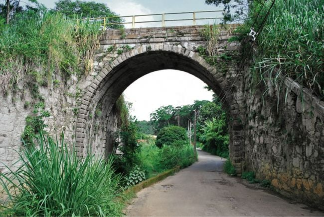
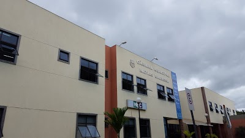

Primeiro lugar, ponte do arco
Ponte do Arco
A Ponte da Liberdade, ou Ponte do Arco, foi construída em 1875, conforme os recursos disponíveis na época, destinada ao uso da então Estrada de Ferro Central do Brasil. A ponte é sustentada por um arco de estrutura de pedras aparentes emparelhadas. Os blocos de pedra de arremate e dos cunhais são em bossagem, importados da Inglaterra, e possuem dimensão externa de 38x50cm.

Segundo lugar, capela do rosário
Capela do Rosário
Construída em 1709 por Matias Barbosa da Silva, era a capela da Fazenda de Matias Barbosa e em 1907 o Cônego Monteiro construiu a Matriz no Centro que passou a chamar de Igreja de Nossa Senhora da Conceição e a antiga passou a ser chamada de Virgem do Rosário (Igreja do Rosário). Os Inconfidentes dormiram nessa igreja; era uma capela de referência para os viajantes do Caminho Novo da Estrada Rea.

Terceiro Lugar, Camara
Camara
A história da Câmara de Matias Barbosa surge logo após a emancipação política da cidade, desmembrando-a da Villa de Juiz de Fora em 1923 e tornando-se município pela Lei n°843, de 7 de setembro de 1923.
A instalação do município só veio a ocorrer no dia 10 de fevereiro de 1924, depois de apurado o pleito em que se elegeram os vereadores.
